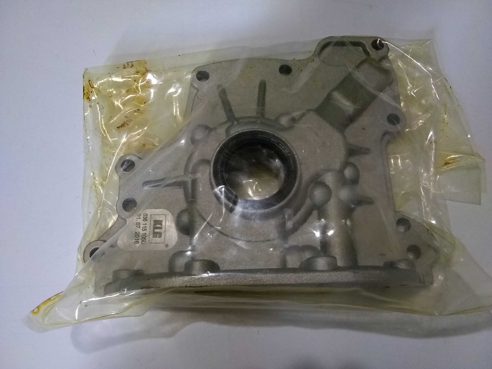

Productos nuevos
 |
Las conchas de biela para Volkswagen Crossfox marca Kolbenschmidt, de origen aleman, fabricadas con los mejores materiales y mas altos estandares de calidad para reparar tu motor y dejarlo como nuevo |
|  |
La bomba de aceite es inmensamente importante, por eso te traemos un producto de calidad Alemana con garantía de hasta 1 año. Marca KLG. |
Productos más vendidos
 |
Electroventilador para Volkswagen Fox La refrigeración es muy importante, por lo tanto debes estar al tanto del funcionamiento de todos los componentes de este sistema tan vital. El electroventilador Siemens original para tu Volkswagen Fox, acá lo tenemos |
 |
Bujías Gauss para Volkswagen Gol Bujias Gauss, calidad alemana, fabricacion brasileña, economicas y super resistentes. |